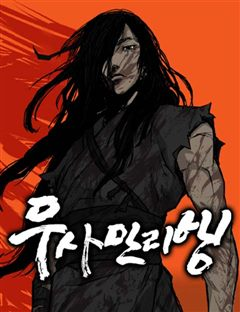
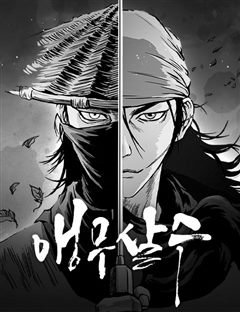
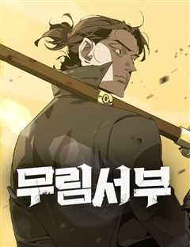

무협 천마·정통무협 웹툰 추천 TOP 30
무협 작품 중에서 천마, 정통무협, 퓨전사극, 동양 같은 요소가 들어간 작품만 골랐어요. 네이버웹툰·카카오웹툰·레진코믹스에서 조건에 맞는 작품 65개 중 인기 순으로 30개를 골랐어요. 인기 TOP 3: 화산귀환, 나노마신, 광마회귀
2026-10-04 기준 · 성인 작품 제외
내 취향으로 더 좁혀서 추천받기 →-
1
 네이버웹툰
네이버웹툰화산귀환
대 화산파 13대 제자.천하삼대검수 매화검존 청명. 천하를 혼란에 빠뜨린 고금제일마 천마의 목을 치고 십만대산의 정상에서 영면. 백 년의 시간을 뛰어넘어 아이의 몸으로 다시 살아나다. ......뭐? 화산이 망해? 이게 뭔 개소리야!?
무협판무명작개그세계관네이버웹툰에서 보기 → -
2
 네이버웹툰
네이버웹툰나노마신
갖은 멸시와 목숨의 위협을 받던 마교의 사생아 천여운, 미래에서 나타난 후손이 천여운의 몸에 나노 머신을 주입한 후 그의 인생이 송두리째 바뀐다. 마교를 넘어 무림 최고의 자리에 오르기 위한 천여운의 거침없는 이야기가 시작된다!
무협천마판무레드아이스 스튜디오사이다네이버웹툰에서 보기 → -
3
 네이버웹툰
네이버웹툰광마회귀
무공에 미친 광마 이자하. 그는 마교 교주의 천옥을 훔쳐 쫓기던 중 벼랑에서 떨어지게 된다. 모든 게 끝났다고 생각한 순간 눈을 떠보니, 사람들에게 무시당하던 점소이 시절로 돌아와 있는데... 게다가 억울한 누명으로 두들겨 맞고 객잔은 박살이 나 있는 상황. 점소이 시절로 회귀한 광…
무협판무사이다세계관회귀네이버웹툰에서 보기 → -
4
 네이버웹툰
네이버웹툰괴력 난신
살인에서 삶의 즐거움을 느끼는 '겸살귀', 정(正). 대 연목검장의 셋째공자 목경운과 똑같이 생긴 얼굴을 가졌는데... "나의 대역이 되어라. 그러면 옥에서 나갈 수 있게 해 주마." "그 기회. 제게 주시겠습니까?" '촤악-!!!' 셋째공자를 죽여버린다. 그리고 본인이 '진짜'가 되…
무협천마판무레드아이스 스튜디오액션네이버웹툰에서 보기 → -
5
 네이버웹툰
네이버웹툰절대회귀
"나를 과거로 보내주시오." 이 시대에서 그를 죽일 수 없다면, 과거로 돌아가면 되리라. 시간을 거스를 수 있는 '회귀대법(回歸大法)'으로 그토록 원하던 과거로 회귀한 한 남자. 가족도, 친구도, 삶도, 모두 잃었던 '검무극(劍無極)'의 복수를 위한 첫걸음이 시작된다.
무협판무참교육미친작화무협/사극네이버웹툰에서 보기 → -
6
 네이버웹툰
네이버웹툰절대군림
"이 강호, 제가 먹습니다!" 왼손에는 군자검을, 오른손에는 지옥도를 든 미스터리한 과일상 아들. 입담과 재주는 물론, 압도적인 무공 실력까지 갖춘 완벽한 그의 진짜 정체는 무엇일까. '강호제패'를 품은 스무 살 청년, '적이건(赤利乾)'의 유쾌한 여정이 시작된다!
무협천마정통무협동양배틀네이버웹툰에서 보기 → -
7
 네이버웹툰
네이버웹툰마도전생기
정파무림 의천맹의 최강 살수, 천하진. 자유를 찾기 위해 탈출을 감행하지만 코앞에서 목숨을 잃고 만다. 그런데… '신교불패, 만마앙복. 삼공자님의 쾌유를 경하드리옵니다!' 무림의 공적, 마교의 삼공자로 전생해버렸다?! 정파무림 최강 비밀병기 천하진의 마도무림 정복기.
무협판무전쟁악역이주인공액션네이버웹툰에서 보기 → -
8
 네이버웹툰
네이버웹툰천마육성
마교의 태왕각주 ‘사마귀’의 명령으로 화산파 출몰 지역으로 파견나간 비객조. ‘설휘’는 화산파의 절대고수 ‘구종명’에게 죽임을 당할 위기에 처한다. 그때 눈 앞에 상태창이 나타나고 정찰 임무를 받기 직전으로 회귀하게 된다. 설휘는 자신이 전생에서 죽임을 당했던 똑같은 임무를 받게 되자…
무협동양판무자극적인시리어스네이버웹툰에서 보기 → -
9
 네이버웹툰
네이버웹툰장씨세가 호위무사
‘당신이 부른 것이오. 나란 사람을... ’ 은둔고수 광휘. 호위무사 되다. 웹소설 원작 웰메이드 무협 시대극!
무협판무사이다무협/사극힘숨찐네이버웹툰에서 보기 → -
10
 네이버웹툰
네이버웹툰절대검감
단전이 부숴졌다는 이유로 집에서는 내놓은 자식 취급을 받던 소운휘는 혈교에 납치되어서도 삼류 첩자로 살아왔다. 어느 날, 전설로만 알려진 검선비록을 찾는데 이용당하다 죽은 운휘는 10년 전, 혈교에 납치되던 그 날로 돌아가게 되고 검의 목소리를 듣는 신비한 능력을 얻는다.
무협동양판무이능력모험네이버웹툰에서 보기 → -
11

네이버웹툰무사만리행
[ 2025 오늘의 우리만화 수상작 ] 2세기 후반, 마한연맹 고리국(古離國)의 무사 나루. 믿었던 스승의 배신으로 나라가 멸망하고, 평생을 바쳐 지켜주겠노라 맹세했던 소단공주의 행방이 묘연해진다. 소단 공주의 행방을 쫓던 나루는 서역으로 떠났다는 배신자의 말에 로마제국의 검투 노예로…
무협퓨전사극판무명작성장물네이버웹툰에서 보기 → -
12
 네이버웹툰
네이버웹툰환생천마
철혈의 맹주, 강호의 절대자 '천하진'. 가문의 수치라 불리는 망나니 '벽리단'의 몸으로 깨어나다! 취미는 사기도박, 검은 창고에 박아둔지 오래. 하루아침에 천하제일인에서 천하의 쓰레기가 된 그는 다시 검을 잡고, 전생에서 이루지 못한 경지에 오르고자 한다.
무협천마동양판무사이다네이버웹툰에서 보기 → -
13
 네이버웹툰
네이버웹툰시한부 천재가 살아남는 법
'스물을 넘기지 못하고 단명할 운명'을 타고난 정연신. 집안사람들 모두 연신을 홀대하지만, 직접 무공을 만들 정도로 그의 실력은 대단했다. 그러던 어느 날, 연신은 자신의 수명이 얼마 남지 않았음을 알게 되는데... 시한부 천재 정연신의 살아남기 위한 고군분투가 펼쳐진다!
무협정통무협동양시리어스모험네이버웹툰에서 보기 → -
14

네이버웹툰앵무살수
평범한 뱃사공으로 살고 있는 노소하. 하지만 그의 정체는 전설적인 구파검법의 후계자다. 이제 진시황이 남긴 비서 선근경을 향한 살수행이 시작된다.
무협판무네이버웹툰에서 보기 → -
15
 네이버웹툰
네이버웹툰모든걸 기억하는 천재무사
모든걸 기억하는 삼류무사 진소운. 30년 전 마교가 재림하기 전으로 회귀하다. 과거로 돌아온 사실이, 딱히 날더러 세상을 구하라는 신호로는 보이진 않는다. ‘그랬다면 최소한 뭔가 특별한 능력을 주거나 장삼봉 조사의 영혼 같은 거라도 붙여줘야 했을 테니까?’ 답 없는 삼류 문파인 사문.…
무협판무레드아이스 스튜디오액션판타지소년물네이버웹툰에서 보기 → -
16
 네이버웹툰
네이버웹툰파브르 in 사천당가
독물과 독충을 다루던 백만 스트리머 매운 파브르. 아프리카 현지촬영중 블랙맘바에 물려 무림에 전생하게 된다. 정글에서 자신이 좋아하는 독물들을 키우며 자연인 생활을 하던 주인공은 독공을 사용하는 사천당가의 눈에 띄게 된다. "자네. 우리 식구(食口)가 되게!"
무협동양판무액션판타지네이버웹툰에서 보기 → -
17
 네이버웹툰
네이버웹툰천마는 조용히 살고싶다
'다음 생에는 반대로 살아보고 싶구나...' 오직 공포와 경외만이 전부였던 천마는 죽음의 순간 '증혼마공'을 제대로 익힐 수 있는 실마리를 얻는다. '증혼마공'은 타인의 혼백을 탐하기만 하는 게 아니었다. 그렇게 천마는 언제 죽을지 모르는 공자 벽태산의 몸으로 깨어나는데... 살기 위…
무협천마동양환생무협/사극네이버웹툰에서 보기 → -
18
 네이버웹툰
네이버웹툰할배무사와 지존 손녀
죽을 날을 앞두고 미련없이 생을 마무리 하려던 순간 덮친 멸문지화! 유진산은 홀로 생존한 갓난 손녀 '유설'이 다 자랄 때까지만이라도 살아남기로 결심한다. 이미 늙어버린 몸으로 육아와 수련을 병행하며 눈물겨운 사투를 벌이는 동안, 어느새 무림지존의 기재를 타고난 손녀는 믿을 수 없이…
무협정통무협모험가족액션네이버웹툰에서 보기 → -
19
 네이버웹툰
네이버웹툰천하제일 대사형
잔혹했던 정사대전에 반 강제적으로 끌려갔던 대사형 ‘혁무상’. 수많은 피가 흐른 전쟁에 참전한지 7년. 전쟁은 진즉 끝났음에도 돌아오지 않아 죽은 줄 알았다. 간신히 고향 땅을 밟은 혁무상이 보게 된 것은, 고작 삼류 흑도에게 핍박당해 무너져가는 고향 용호무관의 모습. 분노에 찬 혁무…
무협판무사이다참교육환골탈태네이버웹툰에서 보기 → -
20
 네이버웹툰
네이버웹툰황제의 검
정난의 변에서 간신히 살아난 주윤문, 마교 천하제일 천마(天魔)와 소림사 육조 혜능(慧能)을 몸 안에 받아 천마서생 '파천'으로 재탄생하게 되는데… 절대지존을 향한 파천의 새로운 이야기가 시작된다!
무협동양판무서양신화네이버웹툰에서 보기 → -
21
 네이버웹툰
네이버웹툰멸귀수도전
"내 복수는 요귀를 절멸시켜야 끝나는 거야." 부모를 죽인 요귀를 잔혹하게 효수한 이후, 마을에서 괴물이라고 손가락질 받던 소년 '이세'. 삶에 더 이상 미련이 없던 '이세'는 도깨비이자 요귀사냥꾼인 '몽련'을 만나 세상에서 요귀를 절멸시키겠다는 목표를 가지게 된다. 그렇게 시작된 몽…
무협동양레드아이스 스튜디오선협오컬트판타지네이버웹툰에서 보기 → -
22
 네이버웹툰
네이버웹툰사상최강
‘천하 십대 고수’라고 불리는 자들. 인간의 한계를 뛰어넘은 그들은 서로를 견제하며 힘의 균형과 세상의 질서를 유지해왔다. 바로 ‘백도현’ 그가 나타나기 전까지는! 내공만으로 사상최강의 힘을 가진 남자 백도현의 시원한 한 방!
무협정통무협동양사이다로맨스네이버웹툰에서 보기 → -
23
 네이버웹툰
네이버웹툰전직지존
천하제일인에서 이름뿐인 한직 관리로 추락한 백소천. 무공도, 명예도 모두 잃었지만 그의 심지는 아직 꺾이지 않았으니... 바닥에서부터 다시 시작한 전직지존이 잃어버린 힘과 잊고 있던 시간을 되찾는다. 가장 강했던 사내의 두 번째 무림전설.
무협정통무협동양고인물소설원작네이버웹툰에서 보기 → -
24
 네이버웹툰
네이버웹툰흑사
마교와의 마지막 전투에서 무림맹에게 배신당해 모든 전우를 잃은 흑사대장 정화… 악착같이 살아남은 그녀는 맹세한다. 전우들을 죽음으로 몰아넣은 마교와 무림맹 모두 없애버리겠다고. ”하늘이시여! 정녕 대의가 살아있다면… 죽어간 전우들의 한을 씻어낼 기회를 주소서!“
무협정통무협동양흑백시리어스네이버웹툰에서 보기 → -
25

네이버웹툰무림서부
황제가 무공을 통한 철혈정치로 제국을 천년동안 유지함에 따라, 오로지 황군 무공만이 힘이요 법도로 살아남고, 고전 무공들은 스러지고 만다. 이런 세계에 환생한 무협지 마니아, 주인공 장건. 과연 그는 동경하던 고전 무공을 되살릴 수 있을까. 서부 대륙 개척지에서 벌어지는 정통 무협의…
무협판무세계관힘숨찐소설원작네이버웹툰에서 보기 → -
26
 네이버웹툰
네이버웹툰짜장 한 그릇에 제갈세가 데릴사위
짜장면 한 그릇으로 전 무림을 평정할 수 있을 것 같다? 최고의 중식 요리사를 꿈꿨지만 중국 송나라 시대로 보내져버린 주인공! 하지만 깨어난 몸에 무공은 전혀 없고, 남은 거라곤 전생에서 익힌 요리 기술들뿐. 그런데 이 요리들... 반응이 매우 좋다! 이번 생에는 과연 짜장면으로 중원…
무협판무하렘환생병맛네이버웹툰에서 보기 → -
27
 네이버웹툰
네이버웹툰천재 무림 트레이너
대 역병 시대, 운영하던 헬스장이 망했다. 어떻게든 먹고 살아보려던 찰나 읽고 있던 무협지에 빙의했다. 도착해보니 천년 소림이라 좋아했는데, 이건 뭐? 다들 잘못된 지식과 운동법으로 몸이 다 망가져 있잖아?! 헬스 트레이너였던 내가 이걸 어떻게 참아! 현대의 지식과 운동법으로 사형들을…
무협동양판무가벼운무협/사극네이버웹툰에서 보기 → -
28
 네이버웹툰
네이버웹툰환생했더니 단종의 보모나인
조선의 비극적 왕 단종 곁으로 환생한 여인, 뜻밖에 그의 보모가 되어버린다. 역사의 비극을 바꿀 기회 앞에서 그녀는 어린 군주를 지키기 위해 권력의 소용돌이에 맞서게 되는데…
무협동양동양풍로맨스과거시대물네이버웹툰에서 보기 → -
29
 네이버웹툰
네이버웹툰시리도록 불꽃처럼
"강호로 내려가면 세상이 너의 적이 될 것이야..." 쇠락한 가문의 젊은 가주 '백무진'은 가세를 바로 잡기 위해 세상 밖으로의 여정을 준비한다. 세상은 그의 적이 될 것이라는 예견된 미래에도 불구하고, 무진은 외로운 싸움을 시작한다. <장씨세가 호위무사> 김인호 작가의 2024 무협…
무협정통무협동양판무열혈네이버웹툰에서 보기 → -
30